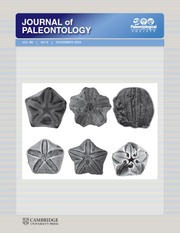

The First record of Hirnantian Ostracoda in the South America: Implicationf for the biostratigraohy and paleozoogeography of the Paraná Basin

Resumo em Português
É reportada a primeira ocorrência de ostracodes na Formação Iapó, unidade do Ordoviciano Superior do Grupo Rio Ivaí na Bacia do Paraná, Brasil. Duas espécies de ostracodes foram identificadas na seção Fazenda Três Barras: Harpabollia harparum (Troedsson, 1918) e Satiellina paranaensis Adôrno e Salas in Adôrno et al., 2016, recuperadas de folhelhos com clastos caídos sobrepostos a diamictitos glaciogênicos, feição típica de estratos Hirnancianos (Ordoviciano Superior) em todo o Gondwana. A taxonomia do gênero Harpabollia, bem como de sua espécie-tipo Harpabollia harparum, foi revisada, e diagnoses emendadas e novas foram propostas respectivamente para cada táxon.Ocorrências de Harpabollia harparum e espécies de Satiellina foram comuns em áreas influenciadas por águas frias. Adicionalmente, a ocorrência de Harpabollia harparum — uma espécie-índice para o Ordoviciano Superior de diversas unidades estratigráficas na Báltica e no Gondwana meridional — permitiu inferir uma idade Hirnanticiana para os depósitos da Formação Iapó. Satiellina paranaensis, além de ocorrer associada a Harpabollia harparum na Formação Iapó da Bacia do Paraná, também é encontrada nos níveis inferiores da Formação Vila Maria, considerados igualmente Hirnancianos. Acima desses níveis inferiores da Formação Vila Maria, uma assembleia de palinomorfos Ruddanianos (Llandovery inferior, Siluriano) bem datada é observada dentro da formação. Essas ocorrências constituem evidência de um processo contínuo de deposição sedimentar durante a transição Ordoviciano-Siluriano na Bacia do Paraná.